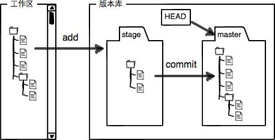

Git¶
Git教程 - 廖雪峰的官方网站 (liaoxuefeng.com)
Git 简介¶
Git 是分布式的版本控制系统
集中式版本控制系统：版本库存放在中央服务器，必须要联网
分布式版本控制系统：每个人的电脑都有完整的版本库，不同电脑之间可以相互推送版本，通常也有中央服务器来方便"交换"大家的修改
Git 安装¶
Ubuntu 中直接 sudo apt install git
Windows：在官网下载 Git - Downloads (git-scm.com)
安装完成后在命令行输入：为每个机器自报家门，global 表示为此机器的所有 Git 仓库使用此配置，也可以为某个仓库单独配置
git config --global user.name "Your Name"
git config --global user.email "email@example.com"
如果是查看自己的用户名和邮箱：
git config uesr.name
git config user.email
创建版本库¶
创建一个新的文件夹，注意目录不要有中文
$ mkdir learngit
$ cd learngit
$ pwd
通过git init命令把这个目录变成Git可以管理的仓库，这样会多一个 .git 的目录用来管理版本库
$ git init
版本控制¶
工作区和暂存区¶
工作区即一个目录，版本库在 .git 目录中，里面有一个叫 stage 的暂存区和 Git 为我们自动创建的第一个分支 master，以及指向master的一个指针叫HEAD

把文件往Git版本库里添加的时候，是分两步执行的：
git add file_path # 添加指定文件到暂存区
git add . # 添加所有的文件到暂存区
git add --all # 添加所有的文件到暂存区
git commit -m "comment" # 将暂存区的内容添加到版本库
git status：可以查看仓库当前状态
- Changes not staged for commit 表示未进入 stage（未 add）
- Changes to be committed 表示进入了 stage 但是没有提交到分支
- Untracked files 表示是新文件
git diff：查看工作区和暂存区差异，显示的格式是 Unix 通用的 diff 格式
git diff --cached 查看暂存区和仓库差异
git diff HEAD 查看工作区和仓库的差异
版本回退¶
git log：查看历史记录
可以在 ~/.bashrc 中添加别名，用 git-log 更方便
alias git-log='git log --pretty=oneline --all --graph
get reflog：可以查看每次操作对应的 commit id
git reset --hard HEAD^：版本回退，HEAD表示当前版本，有几个 ^ 就表示回退多少个版本，也可以写 HEAD~100 表示回退100个版本，也可以 --hard commit_id 直接到指定的版本
撤销修改¶
在工作区的文件中写了不该写的东西，后要撤销
git restore <file>
把\<file>文件在工作区的修改全部撤销，这里有两种情况：
-
\<file>自修改后还没有被放到暂存区，现在，撤销修改就回到和版本库一模一样的状态；
-
\<file>已经添加到暂存区后，又作了修改，现在，撤销修改就回到添加到暂存区后的状态。
总之，就是让这个文件回到最近一次\<file>或\<file>时的状态
在工作区的文件中写了不该写的东西并且加到了暂存区，要撤销
git reset HEAD <file>
如果暂存区有东西，可以把暂存区的修改撤销掉（unstage），重新放回工作区
删除文件¶
在工作区删除文件也是一项修改操作
删除后用 git status 查看：
$ git status
On branch master
Changes not staged for commit:
(use "git add/rm <file>..." to update what will be committed)
(use "git restore <file>..." to discard changes in working directory)
modified: dir/t.txt
deleted: readme.txt
no changes added to commit (use "git add" and/or "git commit -a")
可以用 git rm/add <file> 并 git commit 确实从仓库中删除
也可以 git restore <file> 恢复
注意：从来没有被添加到版本库就被删除的文件，是无法恢复的！
远程仓库¶
远程连接 github
第1步：创建SSH Key
如果用户主目录下的 .ssh 目录下有 id_rsa和id_rsa.pub 两个文件可以跳过第一步，如果没有，打开 Git Bash
$ ssh-keygen -t rsa -C "youremail@example.com"
然后一路回车，密码一般不需要，然后就会生成 SSH Key 的秘钥对，id_rsa是私钥，不能泄露出去，id_rsa.pub是公钥，可以放心地告诉任何人
第2步：
在 github 的 setting 中找到 SSH and GPG keys，add ssh keys，任意 title，并填入公钥 id_rsa.pub 的内容
添加远程库¶
create a new repo
然后可以根据提示把本地的仓库推送到 github
git push：把本地的仓库推送到远程
在第一次推送时提示中的 push 命令是 git push -u origin main，由于远程库是空的，我们第一次推送master分支时，加上了-u参数，Git不但会把本地的master分支内容推送的远程新的master分支，还会把本地的master分支和远程的master分支关联起来，在以后的推送或者拉取时就可以简化命令
删除远程库¶
如果添加的时候地址写错了或者想删除远程库，用 git remote rm <name>
在删除之前最好用 git remote -v 查看一下远程库信息
这里的删除仅仅是删除了本地和远程的绑定
克隆远程库¶
git clone <path>
分支操作¶
其他¶
忽略部分文件¶
在根目录中新建一个 .gitignore，在里面写入要忽略的文件的相对路径即可，如下
classification/5_ResNet/*.pth # 忽略某文件夹下后缀为 pth 的文件
*.pth # 忽略所有后缀为 pth 的文件
如果要 add 忽略的文件夹中的某个文件，需要加上参数 -f
git add dir/readme.md -f # dir 在 .gitignore 中